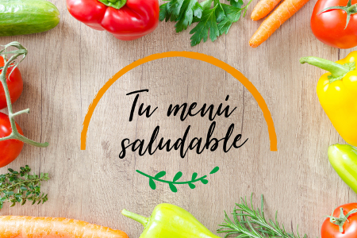

Welcome to
Alimentación saludable para un peso saludable | Peso Saludable | DNPAO | CDC
2021.06.02 14:34Skip directly to site content Skip directly to page options Skip directly to A-Z link Centros para el Control y la Prevención de Enfermedades. CDC 24/7: Salvamos vidas. Protegemos a la gente. Centros para el Control y la Prevención de Enfermedades. CDC 24/7: Salvamos vidas. Protegemos a la gente.™ Peso saludable: ¡No es una dieta, es un estilo de vida! Section Navigation CDC Home Facebook Twitter LinkedIn Syndicate
Alimentación saludable para un peso saludable
English (US) Páginas relacionadasUn plan de alimentación que ayuda a controlar su peso incluye una variedad de alimentos saludables. Agregar una variedad de colores a su plato es como si estuviera comiendo un arcoíris. Las verduras de hoja verde oscura, las naranjas y los tomates incluso las hierbas frescas están llenos de vitaminas, fibra y minerales. Agregar pimientos, brócoli o cebollas congelados a guisos y tortillas aumenta el color y los nutrientes.
Según las Guías Alimentarias para los Estadounidenses 2020-2025 external icon , (enlace solo en inglés) un plan de alimentación saludable:
Resalta la importancia de las frutas, las verduras, los cereales integrales, la leche y los productos lácteos sin grasa o bajos en grasa Incluye una variedad de alimentos con proteínas como mariscos, carnes magras, huevos, legumbres (frijoles y guisantes), productos de soya, nueces y semillas Contiene poca cantidad de grasas saturadas, grasas trans, colesterol, sal (sodio) y azúcares agregados Se mantiene dentro de sus necesidades calóricas diariasEl Plan MiPlato external icon del Departamento de Agricultura de los Estados Unidos (USDA) puede ayudarlo a identificar qué y cuánto comer de los diferentes grupos de alimentos mientras se mantiene dentro de su cantidad recomendada de calorías. También puede descargar Mi Diario de Alimentos pdf icon [PDF-129KB] para ayudarlo a realizar un seguimiento de sus comidas.
Fruta
Las frutas frescas, congeladas o enlatadas son excelentes opciones. Pruebe frutas más allá de las manzanas y los plátanos como el mango, la piña o el kiwi. Cuando la fruta fresca no esté en temporada, pruebe una variedad congelada, enlatada o seca. Tenga en cuenta que las frutas secas y enlatadas pueden contener azúcares o jarabes añadidos. Elija variedades de frutas enlatadas en agua o en su propio jugo.
Vegetales
Agregue variedad a las verduras asadas o al vapor con una hierba como el romero. También puede sofreír verduras en un sartén con un poco de aceite. También puede probar verduras congeladas o enlatadas para un acompañamiento rápido. Simplemente cocínelos en el microondas y sirva. Busque verduras enlatadas sin sal, mantequilla o salsas cremosas agregadas. Para variar, pruebe una verdura nueva cada semana.
Alimentos ricos en calcio
Además de la leche descremada y descremada, considere los yogures descremados y descremados sin azúcares añadidos. Estos vienen en una variedad de sabores y pueden ser un excelente sustituto del postre.
Carnes
Si su receta favorita requiere freír pescado o pollo empanizado, pruebe variaciones más saludables horneando o asando a la parrilla. Tal vez incluso pruebe frijoles secos en lugar de carnes. Pregúntales a sus amigos y busca en Internet y revistas recetas con menos calorías; ¡Te sorprenderá descubrir que tienes un nuevo plato favorito!
Comida reconfortante
La alimentación saludable se basa en el equilibrio. Usted puede disfrutar de sus comidas favoritas, aunque tengan un alto contenido de calorías, grasas o azúcares adicionales. La clave es comerlas solamente de vez en cuando y equilibrarlas con los alimentos más saludables y más actividad física.
Algunos consejos generales sobre las comidas reconfortantes:
Consúmalas con menos frecuencia. Si usted normalmente consume estos alimentos todos los días, reduzca la frecuencia a una vez por semana o una vez al mes. Consuma porciones más pequeñas. Si su alimento de alto contenido calórico favorito es una barra de chocolate, consuma una de tamaño más pequeño o solo la mitad de una barra. Pruebe una versión con menos calorías. Use ingredientes bajos en calorías o prepare la comida de otra manera. Por ejemplo, si la receta de macarrones con queso incluye leche entera, mantequilla y queso con toda la grasa, intente prepararla con leche sin grasa, menos mantequilla, queso bajo en grasa, espinacas frescas y tomates. Solo recuerde no aumentar el tamaño de su porción. Ir Arriba ¿Desea aprender más? Consejos para una alimentación saludable
Empiece a comer más sano con estos consejos sencillos.
La buena nutrición comienza temprano
Presente a los niños alimentos saludables con estas ideas (enlace solo en inglés).
Mejorando sus hábitos alimenticios
Obtenga más información sobre cómo empezar a cambiar sus hábitos alimenticios.
Planificación de comidas
¡Almacene alimentos más saludables que contengan menos calorías para prepararse para el éxito en la pérdida de peso!
Cortar calorías
Descubre maneras de reducir las calorías de sus comidas, refrigerios y bebidas.
Recetas saludables
Enlaces a recetas saludables con información nutricional y sobre la cantidad de calorías (enlace solo en inglés).
Come más, pesa menos
Manejar su peso sin pasar hambre.
Dormir lo suficiente
Regule su apetito con un sueño adecuado (enlace solo en inglés).
To receive email updates about this topic, enter your email address.
Division of Nutrition, Physical Activity, and Obesity About Us Nutrition Physical Activity Overweight & Obesity Healthy Weight, Nutrition, and Physical Activity Breastfeeding Micronutrient Malnutrition State and Local Programs Related Topics Prevent Type 2 Diabetes Prevent Heart Disease Healthy Schools – Promoting Healthy Behaviors Obesity Among People with Disabilities COMUNÍQUESE CON CDC-INFO phone ¿Tiene preguntas? Tenemos respuestas. 1-800-CDC-INFO (800-232-4636) TTY: 888-232-6348 email Comuníquese con CDC-INFO INFORMACIÓN DE LOS CDC Acerca de los CDC Empleos Financiamiento Políticas Visores de archivos y reproductores Privacidad Ley FOIA Ley No Fear OIG Aviso de no discriminación CONÉCTESE CON LOS CDCFacebook Twitter Instagram LinkedIn Snapchat
Youtube Syndicate CDC TV RSS Email HHS.Gov – Departamento de Salud y Servicios Humanos GobiernoUSA.gov Descargo de responsabilidad para sitios externos a los CDC external icon Facebook Twitter LinkedIn
Exit Notification / Disclaimer Policy
Close Links with this icon indicate that you are leaving the CDC website. The Centers for Disease Control and Prevention (CDC) cannot attest to the accuracy of a non-federal website. Linking to a non-federal website does not constitute an endorsement by CDC or any of its employees of the sponsors or the information and products presented on the website. You will be subject to the destination website's privacy policy when you follow the link. CDC is not responsible for Section 508 compliance (accessibility) on other federal or private website. For more information on CDC's web notification policies, see Website Disclaimers . Cancel Continue